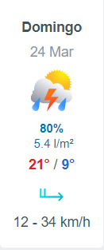
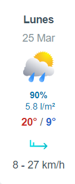
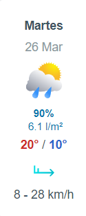
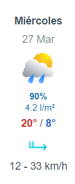
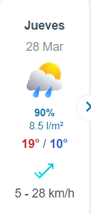
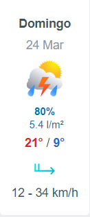
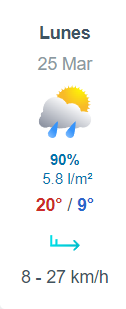
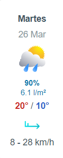
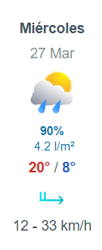
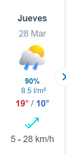
Este pronóstico semanal del clima proporciona una visión general de las temperaturas esperadas, las condiciones climáticas y otros factores relevantes para planificar actividades al aire libre o tomar medidas preventivas según sea necesario
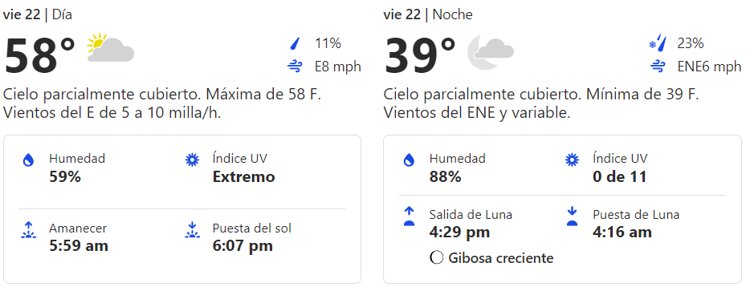
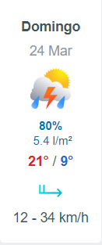
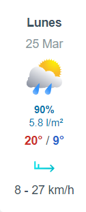
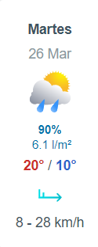
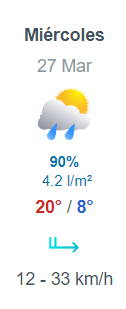
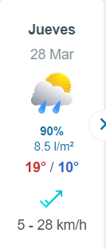